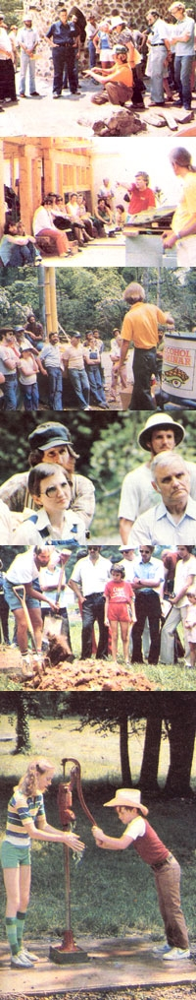

In response to requests we've reveive-from previous seminar participants-for even more hands-on experience we've redesigned some of our offering to create a series of one-day lecture-1st, courses, each of which will be accompanied by two complete days of workshop practice. If you sign up for Coy wood Construction or Low-Cost Solar, 1 example, you'll have the choice attending only the classroom day or stirring around for an additional two day of do-it-yourself experience. The work shops are an entirely optional part of the course work, and-since we want to limb the number of participants in order to sure that everyone involved has a chan to get his or her hands "dirty"-they be offered to attendees on a first corn first served basis. Meat and Dairy Production, Woodstove Construction an Maintenance, and Alternative Was Management, on the other hand, each offer a two-day combination seminar and hands-on workshop.
Next summer's seminar schedule will also include a roster of short classy (each lasting one day) which can be take en in sequence or singly. This series-designed to make any homeowner more ca pable of handling a variety of genera around the-house maintenance tasks includes courses devoted to basic plumbing maintenance, electrical repair, horn heating and cooling, carpentry, masonry, and welding.
As always, the activity at MOTHER' Eco-Village won't end when the sun goes down. We're putting together a full rosten of evening mini-courses . . . to offer instruction in bee keeping, stained glass, alcohol fuel production, methane, and wood-fired electric generators . .. to name a few of the subjects to be covered.
Needless to say, a visit to our North Carolina property next summer will in volve a lot of learning . . . but it's al so bound to be fun! You're welcome to camp out in our beautiful mountain val ley, hike the nature and survival trails, or spend a quiet evening by the lake. All in all, there's hardly a better place thar MOM's Eco-Village to spend your sum men vacation . . . and now's not too soor to start planning that adventure! So-be fore you head outside to shovel your, way through the snowdrift by the front door -take a few minutes to look over the detailed schedule on this Registration Form and decide what courses you'd like to register for. Then drop the complet ed form-along with your deposited the mail .. . and we'll see you next summer!
|
 |
|
|